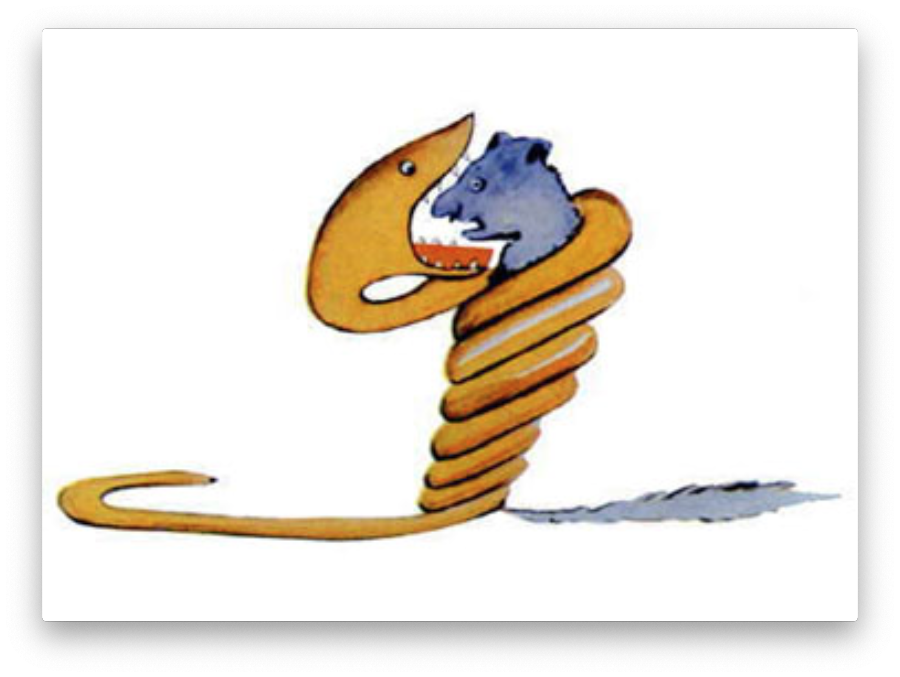
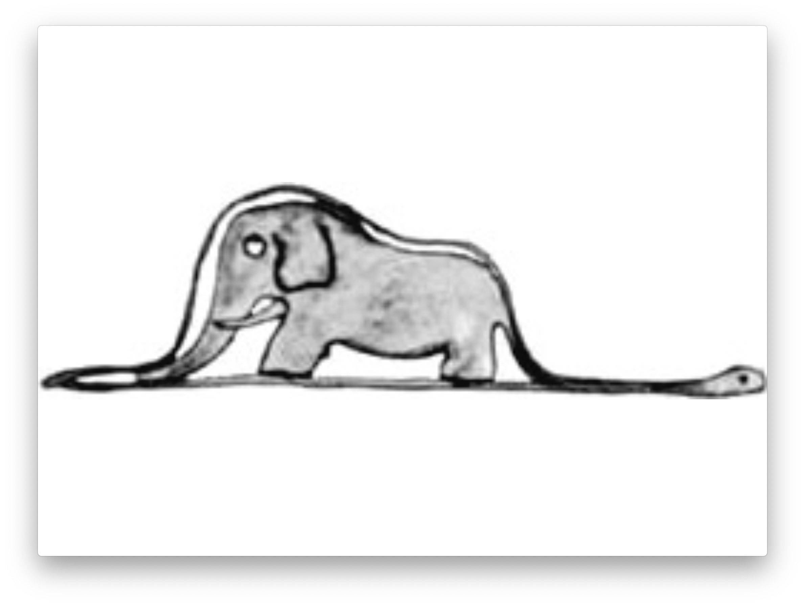
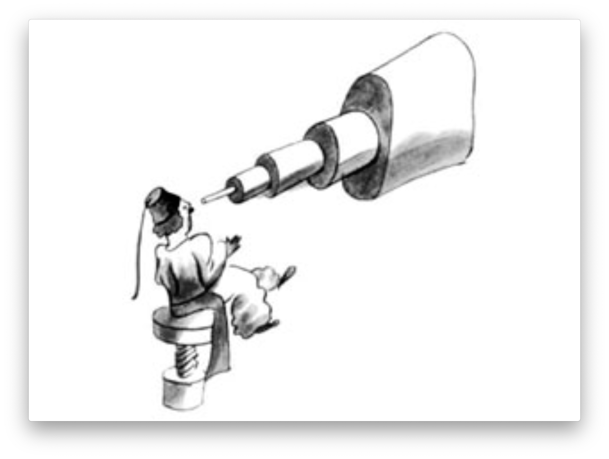

Леону Верту
“Когда мне было шесть лет, в книге под названием «Правдивые истории», где рассказывалось про девственные леса, я увидел однажды удивительную картинку. На картинке огромная змея — удав — глотала хищного зверя. Вот как это было нарисовано:”
В книге говорилось: «Удав заглатывает свою жертву целиком, не жуя. После этого он уже не может шевельнуться и спит полгода подряд, пока не переварит пищу». Я много раздумывал о полной приключений жизни джунглей и тоже нарисовал цветным карандашом свою первую картинку. Это был мой рисунок №1. Вот что я нарисовал:
Я показал мое творение взрослым и спросил, не страшно ли им. — Разве шляпа страшная? — возразили мне. А это была совсем не шляпа. Это был удав, который проглотил слона. Тогда я нарисовал удава изнутри, чтобы взрослым было понятнее. Им ведь всегда нужно все объяснять. Это мой рисунок №2:
Взрослые посоветовали мне не рисовать змей ни снаружи, ни изнутри, а побольше интересоваться географией, историей, арифметикой и правописанием. Вот как случилось, что шести лет я отказался от блестящей карьеры художника. Потерпев неудачу с рисунками №1 и №2, я утратил веру в себя. Взрослые никогда ничего не понимают сами, а для детей очень утомительно без конца им все объяснять и растолковывать. Итак, мне пришлось выбирать другую профессию, и я выучился на летчика. Облетел я чуть ли не весь свет. И география, по правде сказать, мне очень пригодилась. Я умел с первого взгляда отличить Китай от Аризоны. Это очень полезно, если ночью собьешься с пути. На своем веку я много встречал разных серьезных людей. Я долго жил среди взрослых. Я видел их совсем близко. И от этого, признаться, не стал думать о них лучше. Когда я встречал взрослого, который казался мне разумней и понятливей других, я показывал ему свой рисунок №1 — я его сохранил и всегда носил с собою. Я хотел знать, вправду ли этот человек что-то понимает. Но все они отвечали мне: «Это шляпа». И я уже не говорил с ними ни об удавах, ни о джунглях, ни о звездах. Я применялся к их понятиям. Я говорил с ними об игре в бридж и гольф, о политике и о галстуках. И взрослые были очень довольны, что познакомились с таким здравомыслящим человеком.
Так я жил в одиночестве, и не с кем было мне поговорить по душам. И вот шесть лет тому назад пришлось мне сделать вынужденную посадку в Сахаре. Что-то сломалось в моторе моего самолета. Со мной не было ни механика, ни пассажиров, и я решил, что попробую сам все починить, хоть это и очень трудно. Я должен был исправить мотор или погибнуть. Воды у меня едва хватило бы на неделю.
Итак, в первый вечер я уснул на песке в пустыне, где на тысячи миль вокруг не было никакого жилья. Человек, потерпевший кораблекрушение и затерянный на плоту посреди океана, — и тот был бы не так одинок. Вообразите же мое удивление, когда на рассвете меня разбудил чей-то тоненький голосок. Он сказал:
— Пожалуйста… нарисуй мне барашка!
— А?..
— Нарисуй мне барашка…
Я вскочил, точно надо мною грянул гром. Протер глаза. Стал осматриваться. И увидел забавного маленького человечка, который серьезно меня разглядывал. Вот самый лучший его портрет, какой мне после удалось нарисовать. Но на моем рисунке он, конечно, далеко не так хорош, как был на самом деле. Это не моя вина. Когда мне было шесть лет, взрослые убедили меня, что художник из меня не выйдет, и я ничего не научился рисовать, кроме удавов - снаружи и изнутри.
Итак, я во все глаза смотрел на это необычайное явление. Не забудьте, я находился за тысячи миль от человеческого жилья. А между тем ничуть не похоже было, чтобы этот малыш заблудился, или до смерти устал и напуган, или умирает от голода и жажды. По его виду никак нельзя было сказать, что это ребенок, потерявшийся в необитаемой пустыне, вдалеке от всякого жилья. Наконец ко мне вернулся дар речи, и я спросил:
— Но… что ты здесь делаешь?
И он опять попросил тихо и очень серьезно:
— Пожалуйста… нарисуй барашка…
Все это было так таинственно и непостижимо, что я не посмел отказаться. Как ни нелепо это было здесь, в пустыне, на волосок от смерти, я все-таки достал из кармана лист бумаги и вечное перо. Но тут же вспомнил, что учился-то я больше географии, истории, арифметике и правописанию, и сказал малышу (немножко даже сердито сказал), что не умею рисовать. Он ответил:
— Все равно. Нарисуй барашка.
Так как я никогда в жизни не рисовал баранов, я повторил для него одну из двух старых картинок, которые я только и умею рисовать — удава снаружи. И очень изумился, когда малыш воскликнул:
— Нет, нет! Мне не надо слона в удаве! Удав слишком опасен, а слон слишком большой. У меня дома все очень маленькое. Мне нужен барашек. Нарисуй барашка.
И я нарисовал.
Он внимательно посмотрел на мой рисунок и сказал:
— Нет, этот барашек уже совсем хилый. Нарисуй другого.
Я нарисовал.
“Мой новый друг мягко, снисходительно улыбнулся.
— Ты же сам видишь, — сказал он, — это не барашек. Это большой баран. У него рога…
Я опять нарисовал по-другому. Но он и от этого рисунка отказался:
— Этот слишком старый. Мне нужен такой барашек, чтобы жил долго.
Тут я потерял терпение — ведь мне надо было поскорей разобрать мотор — и нацарапал ящик.
И сказал малышу:
— Вот тебе ящик. А в нем сидит такой барашек, какого тебе хочется.
Но как же я удивился, когда мой строгий судья вдруг просиял:
— Вот это хорошо! Как ты думаешь, много этому барашку надо травы?
— А что?
— Ведь у меня дома всего очень мало…
— Ему хватит. Я тебе даю совсем маленького барашка.
— Не такой уж он маленький… — сказал он, наклонив голову и разглядывая рисунок. — Смотри-ка! Он уснул…
Так я познакомился с Маленьким принцем.”
Не скоро я понял, откуда он явился. Маленький принц засыпал меня вопросами, но когда я спрашивал о чем-нибудь, он словно и не слышал. Лишь понемногу, из случайных, мимоходом оброненных слов мне все открылось. Так, когда он впервые увидел мой самолет (самолет я рисовать не стану, мне все равно не справиться), он спросил:
— Что это за штука?
— Это не штука. Это самолет. Мой самолет. Он летает.
И я с гордостью объяснил ему, что умею летать. Тогда он воскликнул:
— Как! Ты упал с неба?
— Да, — скромно ответил я.
— Вот забавно!..
И Маленький принц звонко засмеялся, так что меня взяла досада: я люблю, чтобы к моим злоключениям относились серьезно. Потом он прибавил:
— Значит, ты тоже явился с неба. А с какой планеты?
«Так вот разгадка его таинственного появления здесь, в пустыне!» — подумал я и спросил напрямик:
— Стало быть, ты попал сюда с другой планеты?
Но он не ответил. Он тихо покачал головой, разглядывая мой самолет:
— Ну, на этом ты не мог прилететь издалека…
И надолго задумался о чем-то. Потом вынул из кармана моего барашка и погрузился в созерцание этого сокровища.
Можете себе представить, как разгорелось мое любопытство от этого полупризнания о «других планетах». И я попытался разузнать побольше:
— Откуда же ты прилетел, малыш? Где твой дом? Куда ты хочешь унести моего барашка?
Он помолчал в раздумье, потом сказал:
— Очень хорошо, что ты дал мне ящик: барашек будет там спать по ночам.
— Ну конечно. И если ты будешь умницей, я дам тебе веревку, чтобы днем его привязывать. И колышек.
Маленький принц нахмурился:
— Привязывать? Для чего это?
— Но ведь если ты его не привяжешь, он забредет неведомо куда и потеряется.
Тут мой друг опять весело рассмеялся:
— Да куда же он пойдет?
— Мало ли куда? Все прямо, прямо, куда глаза глядят.
Тогда Маленький принц сказал серьезно:
— Это не страшно, ведь у меня там очень мало места.
И прибавил не без грусти:
— Если идти все прямо да прямо, далеко не уйдешь…
“Так я сделал еще одно важное открытие: его родная планета вся-то величиной с дом!
Впрочем, это меня не слишком удивило. Я знал, что, кроме таких больших планет, как Земля, Юпитер, Марс, Венера, существуют еще сотни других и среди них такие маленькие, что их даже в телескоп трудно разглядеть. Когда астроном открывает такую планетку, он дает ей не имя, а просто номер. Например: астероид 3251.
У меня есть серьезные основания полагать, что Маленький принц прилетел с планетки, которая называется «астероид В-612». Этот астероид был замечен в телескоп лишь один раз, в 1909 году, одним турецким астрономом.
Астроном доложил тогда о своем замечательном открытии на Международном астрономическом конгрессе. Но никто ему не поверил, а все потому, что он был одет по-турецки. Уж такой народ эти взрослые!
К счастью для репутации астероида В-612, турецкий султан велел своим подданным под страхом смерти носить европейское платье. В 1920 году тот астроном снова доложил о своем открытии. На этот раз он был одет по последней моде, — и все с ним согласились.
Я вам рассказал так подробно об астероиде В-612 и даже сообщил его номер только из-за взрослых. Взрослые очень любят цифры. Когда рассказываешь им, что у тебя появился новый друг, они никогда не спросят о самом главном. Никогда они не скажут: «А какой у него голос? В какие игры он любит играть? Ловит ли он бабочек?» Они спрашивают: «Сколько ему лет? Сколько у него братьев? Сколько он весит? Сколько зарабатывает его отец?» И после этого воображают, что узнали человека. Когда говоришь взрослым: «Я видел красивый дом из розового кирпича, в окнах у него герань, а на крыше голуби», — они никак не могут представить себе этот дом. Им надо сказать: «Я видел дом за сто тысяч франков», — и тогда они восклицают: «Какая красота!»
Точно так же, если им сказать: «Вот доказательства, что Маленький принц на самом деле существовал: он был очень, очень славный, он смеялся, и ему хотелось иметь барашка. А кто хочет барашка, тот, безусловно, существует», — если им сказать так, они только пожмут плечами и посмотрят на тебя, как на несмышленого младенца. Но если сказать им: «Он прилетел с планеты, которая называется астероид В-612», — это их убедит, и они не станут докучать вам расспросами. Уж такой народ эти взрослые. Не стоит на них сердиться. Дети должны быть очень снисходительны к взрослым.
Но мы, те, кто понимает, что такое жизнь, мы, конечно, смеемся над номерами и цифрами! Я охотно начал бы эту повесть как волшебную сказку. Я хотел бы начать так:
«Жил да был Маленький принц. Он жил на планете, которая была чуть побольше его самого, и ему очень не хватало друга…». Те, кто понимает, что такое жизнь, сразу бы увидели, что все это чистая правда.
Ибо я совсем не хочу, чтобы мою книжку читали просто ради забавы. Сердце мое больно сжимается , когда я вспоминаю моего маленького друга, и нелегко мне о нем говорить. Прошло уже шесть лет с тех пор, как он вместе со своим барашком покинул меня. И я пытаюсь рассказать о нем для того, чтобы его не забыть. Это очень печально, когда забывают друзей. Не у всякого есть друг. И я боюсь стать таким, как взрослые, которым ничто не интересно, кроме цифр. Вот еще и поэтому я купил ящик с красками и цветные карандаши. Не так это просто — в моем возрасте вновь приниматься за рисование, если за всю свою жизнь только и нарисовал что удава снаружи и изнутри, да и то в шесть лет! Конечно, я постараюсь передать сходство как можно лучше. Но я совсем не уверен, что у меня это получится. Один портрет выходит удачно, а другой ни капли не похож. Вот и с ростом тоже: на одном рисунке принц у меня вышел чересчур большой, на другом — чересчур маленький. И я плохо помню, какого цвета была его одежда. Я пробую рисовать и так и эдак, наугад, с грехом пополам. Наконец, я могу ошибиться и в каких-то важных подробностях. Но вы уж не взыщите. Мой друг никогда мне ничего не объяснял. Может быть, он думал, что я такой же, как он. Но я, к сожалению, не умею увидеть барашка сквозь стенки ящика. Может быть, я немного похож на взрослых. Наверно, я старею.